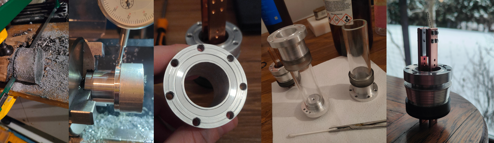
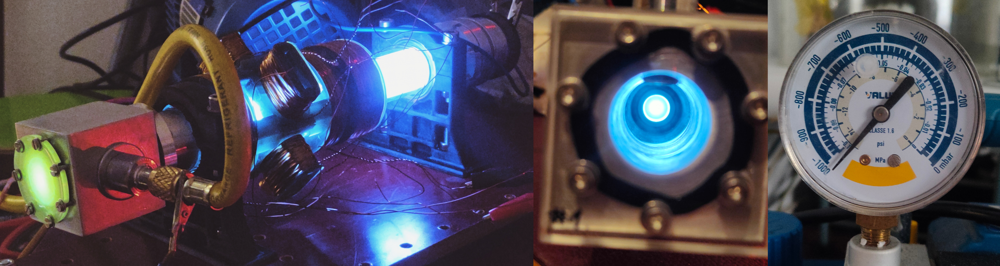

Welcome to the first part of I think a long journey to making an electron microscope / electron beam litography thingy. Due to a SSD failure, my CAD designs have been lost mid project (happend like third time so i should do a RAID confuguration later...).
The story begins with the idea of creating a computer generated holograms. To do so I had to come up with a way to etch nanometer sized designs. The first thing that came to my mind was electron beam litography. The way this would work would be to recreate a software simulated difraction pattern onto a glass substrate coated with a thin reflective metal layer. I already have the means to do that either bt PVD magnetrone sputtering or by tollens trial to cover glass with silver. The hologram etching requires much more complex setup so I decided to go with simple electron microscope first and then scale up.
To make a simple SEM I designed and manufactured vacuumm chamber with electron gun, acceleration tube, focusing and deflection coils and a window covered with ZnS that should glow upon electron beam expousure. The main materials used were aluminium and borosilicate glass joined by epoxy and sealed by nitryl rubber. These materials should offer good enough vacuumm. The process is ilustrated below
The first test was to see if the system holds vacuumm. The gauge on the vacuumm pump is very limited in providing any vialable information other than there is vacumm or there is very large leak. The system stayed on full vacuumm (acording to gauge) for many hours, but the plasma went visibly from white to purple after one hour. That being said, the system is good enough and the leaks could be just as well locadet in pupm valve. To test the vacuumm furhter the vacuumm sensor head and a cutoff valve between the pump and the microscope chamber must be implemented. The benefit of such small system is almost instant pump down to pretty decent vacuumm. For now the turbo pump is out of my price range.
The test was sucessfull. The first try to emmit nay electrons was not. The fillament used was changed from kanthal wire to tungsten wire (the thermionic emission in kanthal was unmanagable) but the only tungsten wire I had happend to be 1mm in diameter, which caused almost instant overheat of the feedthrough. I tured to use 12V car bulbs but this offer pretty limited and short lived testing oportunieties. After arrival of thinner tungsten wire i will resume the tests and post the hopefully working electron gun setup :) See you in the next update!